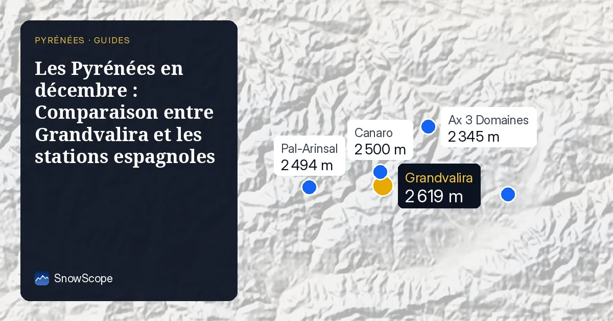

Les Pyrénées en décembre : Comparaison entre Grandvalira et les stations espagnoles
Vous planifiez un séjour au ski dans les Pyrénées en décembre 2026 ? Nous examinons les chiffres pour Grandvalira, Baqueira Beret, Astún-Candanchú, Boí Taüll et Cauterets pour savoir où trouver la meilleure neige et les meilleurs prix.
Consultez les prévisions neige en temps réel pour Grandvalira sur l'application SnowScopeHauteurs de neige, alertes poudreuse et carte 3D, gratuitement.
Le match
Les Pyrénées offrent un mélange de grandes et petites stations de ski en Andorre, en Espagne et en France. Grandvalira compte 137 km de pistes balisées et 53 remontées mécaniques. Côté espagnol, Baqueira Beret compte 154 km de pistes et 36 remontées. Astún-Candanchú propose 35 km de pistes, Boí Taüll 35 km, et Cauterets côté français offre 25 km de pistes.
L'altitude des remontées varie dans la région. Grandvalira s'étend de 1 674 m à 2 619 m, avec un dénivelé de 944 m. Baqueira Beret se situe entre 1 504 m et 2 600 m. Astún-Candanchú va de 1 659 m à 2 272 m. Boí Taüll commence haut à 2 039 m et atteint 2 747 m. Cauterets s'étend de 1 725 m à 2 420 m.

Neige : qui gagne en décembre
Notre historique de neige des 46 hivers passés montre que début décembre, la neige peut être fine en bas de toutes ces stations. À Grandvalira, la base est à 1 674 m avec une profondeur habituelle en décembre de 9 cm et de 8 cm le 15 décembre. Baqueira Beret a une base à 1 504 m avec 8 cm en décembre et 9 cm le 15 décembre. Astún-Candanchú a 18 cm en décembre à sa base de 1 659 m, tombant à 13 cm le 15 décembre. Boí Taüll a une base de 2 039 m avec 16 cm en décembre et 17 cm le 15 décembre. Cauterets a une base de 1 725 m avec 23 cm en décembre et 21 cm le 15 décembre.
Plus haut, les chiffres s'améliorent. À mi-montagne, la profondeur habituelle en décembre est de 27 cm à Grandvalira, 20 cm à Baqueira Beret, 28 cm à Astún-Candanchú, 25 cm à Boí Taüll et 33 cm à Cauterets. Au sommet des remontées, Grandvalira atteint 45 cm, Baqueira Beret 30 cm, Astún-Candanchú 38 cm, Boí Taüll 34 cm et Cauterets 42 cm. En comparant les 15 premiers hivers aux 15 derniers, la profondeur à mi-montagne est passée de 21 cm à 25 cm à Grandvalira, de 17 cm à 20 cm à Baqueira Beret, de 29 cm à 23 cm à Astún-Candanchú, de 22 cm à 20 cm à Boí Taüll et de 35 cm à 23 cm à Cauterets.
Prix : qui gagne
Les tarifs officiels montrent des différences claires pour les forfaits journée de la saison 2026-27. Grandvalira facture 62,50 EUR pour un forfait adulte 1 jour acheté en ligne pour le lundi 14 décembre 2026, et 72,00 EUR au guichet. Baqueira Beret affiche un forfait adulte 1 jour Baqueira Ticket à 74,00 €, un forfait 6 jours à 359,00 € et un forfait 1 jour avec la carte rechargeable Baqueira Pass à 70,00 €.
Astún-Candanchú facture 54,50 EUR pour un forfait adulte 1 jour combiné acheté en ligne et 59,50 EUR au guichet, avec un forfait 5 jours à 237,00 EUR. Boí Taüll affiche un forfait adulte 1 jour à 49,00 EUR. Cauterets facture 46 EUR pour un forfait adulte 1 jour tarif public et 276 EUR pour le forfait 6 jours.
La règle de fin décembre
La part des hivers avec 30 cm ou plus à mi-montagne montre pourquoi le timing compte. À Grandvalira, cette part passe de 30 % la première semaine de décembre à 65 % entre le 22 et le 28 décembre. À Baqueira Beret, elle passe de 22 % à 41 %. À Astún-Candanchú, de 35 % à 63 %. À Boí Taüll, de 35 % à 54 %. À Cauterets, de 43 % à 67 %. Attendre les dernières semaines offre de bien meilleures chances d'enneigement.
Verdict par type de séjour
Si vous voulez un grand domaine et la neige habituelle de décembre la plus épaisse au sommet de ce groupe, 45 cm, Grandvalira est un excellent choix, surtout si vous réservez votre forfait en ligne à l'avance. Si vous préférez un budget plus serré côté espagnol, Boí Taüll propose un forfait 1 jour à 49,00 EUR avec une base haute à 2 039 m. Pour ceux qui regardent Cauterets en France, le forfait 1 jour à 46 EUR s'accompagne d'une profondeur habituelle en décembre de 42 cm au sommet.
Conseils aux skieurs
- Réservez votre forfait Grandvalira en ligne avant votre arrivée pour payer 62,50 EUR au lieu des 72,00 EUR au guichet.
- Visez la semaine du 22 au 28 décembre pour avoir la plus grande probabilité d'avoir 30 cm ou plus de neige à mi-montagne dans toutes les stations.
- Consultez la bulletin des avalanches avant de skier hors-piste dans ces zones.
- Choisissez des stations avec une base élevée comme Boí Taüll à 2 039 m si vous voyagez pendant les semaines peu enneigées de début décembre.
- Utilisez les sites officiels des stations pour vérifier les dates d'ouverture exactes et le nombre de remontées actives pour décembre 2026.
Autres cartes (sites externes)
Références et crédits
- Grandvalira, official ski pass booking (online price for 14 December 2026, read 2026-11-13) www.grandvalira.com/en/ski-pass/day
- Baqueira Beret, official prices (tarifas), season 26-27 www.baqueira.es/es/tarifas
- Astún, official lift pass prices (tarifas 26-27) astun.com/forfaits/
- Boí Taüll, official lift pass prices (tarifes) pirineu365.cat/boitaull/estacio/tarifes/
- N'PY, Cauterets official ski pass prices 2026-27 www.n-py.com/fr/cauterets/forfaits-ski
- SnowScope, December snow at three heights and today's snow map snowscope.app/
À propos de ces chiffres
Chiffres de neige : historique SnowScope, 46 hivers passés (1980-81 à 2025-26) à trois altitudes de chaque station (un modèle du passé corrigé de l'altitude : une estimation pour une zone, pas des mesures de la station) ; chiffres de décembre calculés à partir des hauteurs quotidiennes de ces hivers. Neige actuelle et tendance à deux semaines : prévisions SnowScope (tendance ECMWF et GFS, une fourchette, pas une promesse). Remontées et pistes : cartographie OpenSkiMap. Prix : pages officielles des stations ci-dessous, lues le 2026-11-13 ; les prix peuvent changer, vérifiez avant de réserver.
Citer ce bulletin
Pour la recherche, l'enseignement ou la presse : chiffres et graphiques réutilisables librement sous CC BY 4.0 avec cette citation.
SnowScope (2026), Les Pyrénées en décembre : Comparaison entre Grandvalira et les stations espagnoles, https://snowscope.app/blog/fr/2026/11/andorra-vs-spanish-pyrenees-december-ski-2026.html, consulté le 2026-11-14
SnowScope (Atlas Labs). (2026, November 14). Les Pyrénées en décembre : Comparaison entre Grandvalira et les stations espagnoles. SnowScope snow reports. https://snowscope.app/blog/fr/2026/11/andorra-vs-spanish-pyrenees-december-ski-2026.html
BibTeX
@misc{snowscope2026andorravsspanishpyrenees,
author = {{SnowScope (Atlas Labs)}},
title = {Les Pyrénées en décembre : Comparaison entre Grandvalira et les stations espagnoles},
year = {2026},
month = nov,
howpublished = {\url{https://snowscope.app/blog/fr/2026/11/andorra-vs-spanish-pyrenees-december-ski-2026.html}},
note = {Published 2026-11-14 15:21 UTC; accessed 2026-11-14}
}· CC BY 4.0 · Méthodes, données et outils →
Grandvalira : neige et température selon l'altitude, cet hiver vs l'hiver dernier (outils) →
Suivre Grandvalira
Gratuit : un message quand la neige arrive, et la météo chaque matin.
Autres bulletins neige

Baqueira-Beret est dans le Val d'Aran, côté atlantique des Pyrénées. Ce que cela change pour sa neige, vérifié sur 46 hivers passés face à La Molina, et quand y aller.

Cauterets propose 25 km de pistes pour 46 EUR, mais notre historique d'enneigement montre que la meilleure chance d'avoir de la neige est la dernière semaine de décembre.